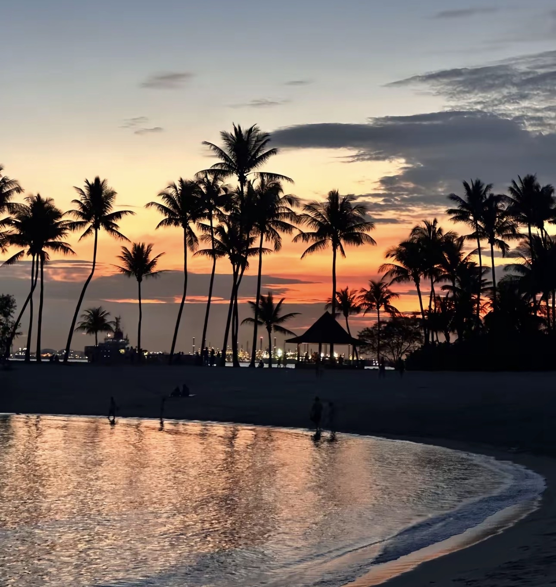
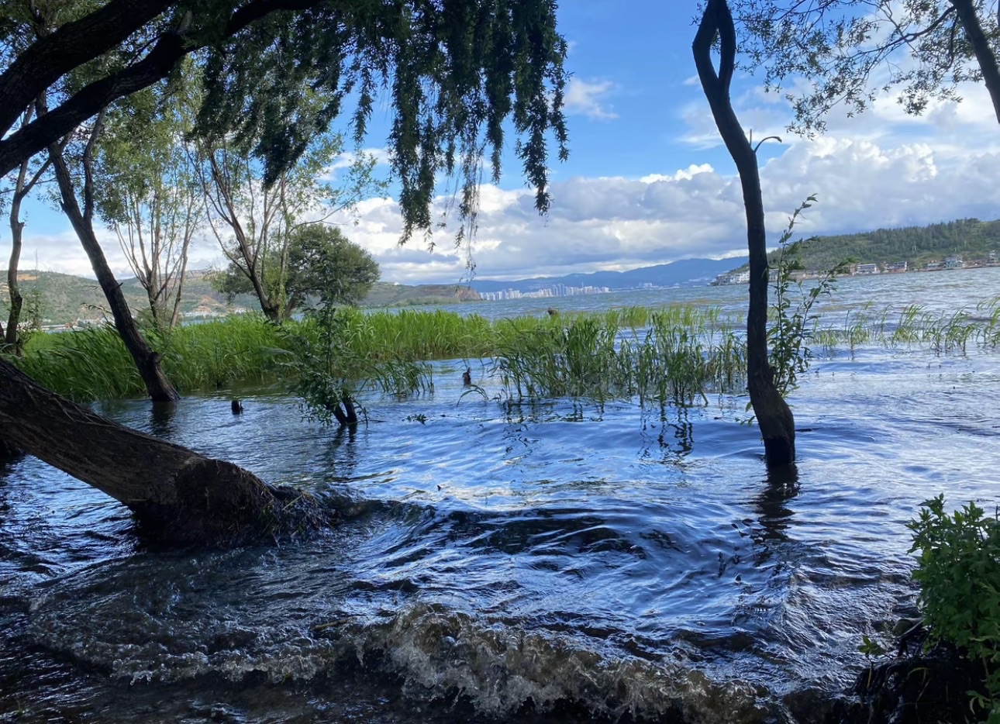
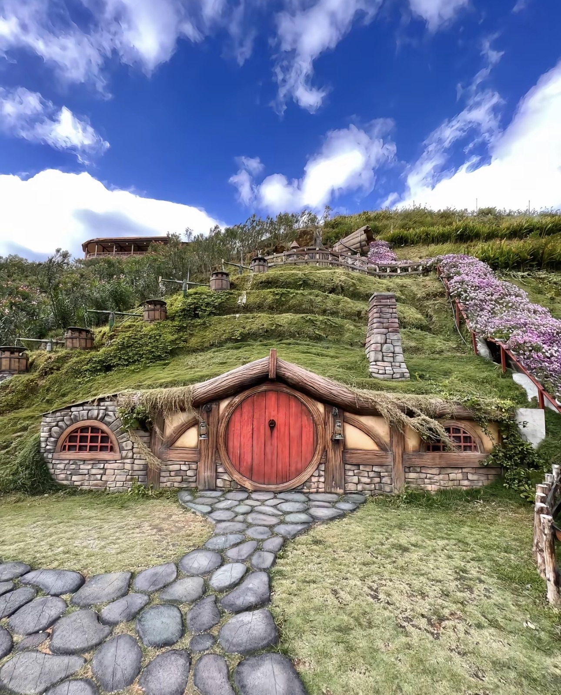
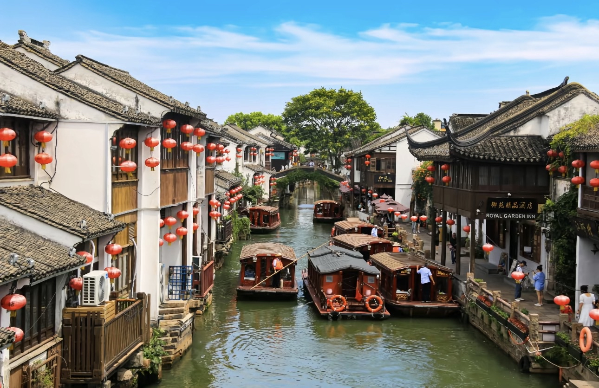
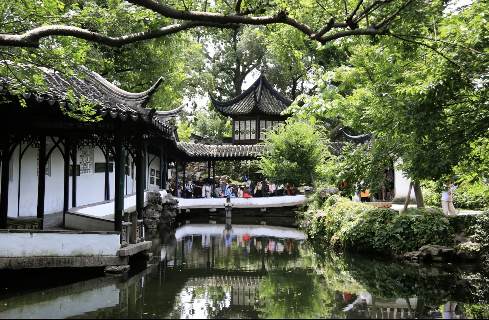
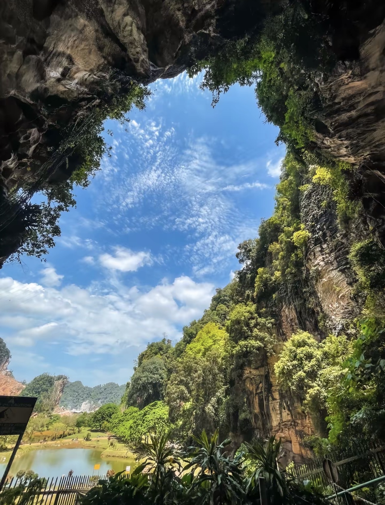

Our Photography
The Collection
A selection of landscapes, street scenes, portraits and night photography from our shared archive.

Sentosa
Landscape · Zi yu

China Suzhou
Landscape· Zi Yu

Jin Ma Lun
Landscape · Zi yu

China Suzhou
Landscape · Zi Yu

China Suzhou
Nature· Zi Yu

Ipoh Pilidong
Nature · Zi yu